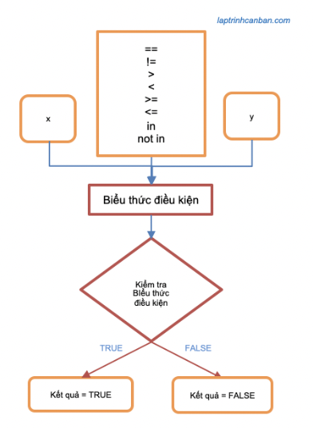

Hướng dẫn cách sử dụng toán tử so sánh trong python. Bạn sẽ học được các phép so sánh trong python được biểu diễn thông qua các toán tử so sánh trong python và ứng dụng chúng để so sánh chuỗi python, so sánh 2 list trong python cũng như là so sánh các kiểu dữ liệu khác trong python sau bài học này.
Bảng toán tử so sánh trong python
Để thực hiện các phép so sánh trong python, chúng ta sử dụng các toán tử so sánh trong python được liệt kê trong bảng dưới đây:
| Toán tử | Biểu thức điều kiện | Ý nghĩa |
|---|---|---|
| == | x == y | x và y bằng nhau |
| != | x != y | x và y không bằng nhau |
| > | x > y | x lớn hơn y |
| < | x < y | x nhỏ hơn y |
| >= | x >= y | x bằng hoặc lớn hơn y |
| <= | x <= y | x bằng hoặc nhỏ hơn y |
| in | x in y | phần tử x tồn tại trong y |
| not in | x not in y | phần tử x không tồn tại trong y |
Phép so sánh trong python sẽ kết hợp toán tử so sánh cùng với hai giá trị ở hai vế trái phải thành một biểu thức điều kiện, sau đó kiểm tra biểu thức điều kiện này là đúng hay sai và đưa ra kết quả. Kết quả của các phép so sánh trong python sẽ là kiểu boolean trong python với hai giá trị là True (đúng) hoặc False (sai), và phép toán so sánh trong python được sử dụng để cấu tạo biểu thức điều kiện được sử dụng trong câu lệnh if trong python.

So sánh bằng trong python
Để so sánh hai giá trị có bằng nhau hay không, chúng ta sử dụng toán tử so sánh bằng trong python == hoặc là toán tử so sánh khác trong python !=.
Nếu hai giá trị bằng nhau, toán tử so sánh bằng trong python == trả về True và ngược lại nếu hai giá trị không bằng nhau, toán tử so sánh khác trong python != sẽ trả về True.
Chúng ta hãy cùng xem một số ví dụ cụ thể sử dụng phép so sánh bằng trong python sau đây:
So sánh 2 số trong Python
Khi sử dụng phép so sánh bằng để so sánh hai số trong python, không những chúng ta có thể so sánh giữa số nguyên với số nguyên, số thực với số thực, mà còn có thể so sánh các số có kiểu dữ liệu khác nhau như số nguyên với số thực v.v..
Ví dụ:
print(1 == 1) |
- Bạn có thể tham khảo chi tiết về các loại số trong python tại bài viết Các loại số trong python.
So sánh chuỗi python
Khi sử dụng phép so sánh bằng để so sánh chuỗi python, chúng ta kiểm tra giá trị của chúng có bằng nhau hay không. Lưu ý là khi so sánh chuỗi trong python, chúng ta cần phân biệt giữa chữ hoa và chữ thường. Ví dụ:
print("Hello" == "Hello") |
So sánh 2 list trong Python
Khi sử dụng phép so sánh bằng để so sánh 2 list trong python, nếu như toàn bộ giá trị của các phần tử trong hai list đều giống nhau, giá trị True được trả về. Ví dụ:
print(["Red", "Blue"] == ["Red", "Blue"]) |
Lưu ý là khi so sánh hai list trong python, chúng ta cần chú ý tới cả thứ tự của các phần tử trong hai list. Nếu như giá trị các phần tử trong hai list là giống nhưng thứ tự của chúng trong hai list là khác nhau, hai list này sẽ được coi là khác nhau.
print(["Red", "Blue"] == ["Red", "Blue"]) |
Tương tự với list, chúng ta cũng dùng phép so sánh bằng giữa hai tuple như sau:
print(("Red", "Blue") == ("Red", "Blue") |
So sánh chuỗi với số trong python và chú ý lỗi logic
Về căn bản, chúng ta không thể so sánh giữa chuỗi và số trong python, do hai kiểu dữ liệu này hoàn toàn khác nhau. Tuy nhiên khi so sánh bằng giữa một chuỗi và một số, do kết quả trả về của phép tính luôn là False chứ không xảy ra lỗi, nên chúng ta rất dễ hay nhầm lẫn khi nhập một chữ số từ bàn phím bằng lệnh input và tiến hành so sánh chữ số này với một số mà quên không đổi kiểu dữ liệu của chữ số sang số trước. Lỗi này đặc biệt hay gặp khi sử dụng so sánh bằng cùng lệnh input() trong hàm điều kiện python.
Ví dụ, chúng ta nhập một số từ bàn phím bằng lệnh input() và so sánh với một số như sau:
print("Nhập số 1") |
Kết quả:
Nhập số 1 |
Bạn có thể thấy mặc dù chúng ta đã nhập số 1 từ bàn phím, nhưng các lệnh trong khối if luôn bị bỏ qua, else luôn được chạy và kết quả trả về luôn là Số đã cho khác 1. Vì sao vậy?
Câu trả lời là tuy chúng ta nhập số 1 từ bàn phím, nhưng khi đó python sẽ chỉ coi dữ liệu nhập từ bàn phím là kiểu chuỗi, khiến việc so sánh bằng giữa một chuỗi và một số trong biểu thức điều kiện luôn cho ra kết quả False và khối Else được thực hiện.
print("Nhập số 1") |
Để tránh lỗi này, hãy luôn chú ý phải dùng hàm int trong python hoặc hàm float() trong python để đổi chữ số nhập vào thành kiểu số rồi mới tính toán bạn nha.
Phép so sánh lớn nhỏ trong python
Để so sánh lớn nhỏ trong python, chúng ta sử dụng các toán tử <, >, >= và <=.
Toán tử < cho kết quả là True nếu giá trị bên trái nhỏ hơn giá trị bên phải và ngược lại, toán tử > cho kết quả là True nếu giá trị bên trái lớn hơn giá trị bên phải.
Tương tự, toán tử <= cho kết quả là True nếu giá trị bên trái nhỏ hơn hoặc bằng giá trị bên phải và ngược lại, toán tử >= cho kết quả là True nếu giá trị bên trái lớn hơn hoặc bằng giá trị bên phải.
Chúng ta hãy cùng xem một số ví dụ cụ thể sử dụng phép so sánh lớn nhỏ trong python sau đây:
So sánh 2 số trong Python
Khi sử dụng phép so sánh lớn nhỏ để so sánh 2 số trong Python, chúng ta kiểm tra giá trị của chúng lớn hơn hay nhỏ hơn.
print(5 > 3) |
Lưu ý là chúng ta không thể sử dụng phép so sánh lớn nhỏ để so sánh 2 số phức trong Python.
print((5 + 2j) > (3 + 4j)) |
Lỗi sau đây sẽ xảy ra:
Traceback (most recent call last): |
So sánh chuỗi python
Khi sử dụng phép so sánh lớn nhỏ để so sánh chuỗi python, thay vì so sánh trực tiếp giá trị của hai chuỗi, chúng ta sẽ so sánh các điểm mã unicode (unicode code point) của chúng.
Để kiểm tra điểm mã Unicode của một ký tự, chúng ta sử dụng tới hàm ord() trong python như sau:
print(ord("a")) |
Khi so sánh lớn nhỏ hai ký tự đơn, chúng ta đơn giản so sánh điểm mã unicode của chúng. Ví dụ, do điểm mã unicode của ký tự a là 97 sẽ lớn hơn của ký tự A à 65 nên phép so sánh sau sẽ cho ra kết quả True.
print( "a" > "A") |
Tuy nhiên khi so sánh 2 chuỗi ký tự với nhau, chúng ta không thể đơn thuần so sánh các điểm mã unicode của từng ký tự được. Lúc này, phép so sánh sẽ bắt đầu từ ký tự đầu tiên trong hai chuỗi, và nếu chúng giống nhau, các ký tự tiếp theo được so sánh cho tới khi xuất hiện một ký tự khác nhau đầu tiên trong hai chuỗi. Khi đó, điểm mã unicode của ký tự này sẽ đại diện cho cả chuỗi và được dùng để so sánh lớn nhỏ. Ví dụ:
print( "aAaaaaa" < "aaa") |
Ở ví dụ 1, ký tự khác nhau đầu tiên trong hai chuỗi là A và a, do đó mặc dù chuỗi bên trái nhiều ký tự hơn chuỗi bên phải nhưng điểm mã unicode của A lại nhỏ hơn a, do đó chuỗi bên trái sẽ nhỏ hơn chuỗi bên phải.
Tương tự ở ví dụ 2, mặc dù chuỗi bên trái chỉ gồm 1 ký tự, nhưng điểm mã unicode của a lại lớn hơn A, kết quả là chuỗi bên trái sẽ lớn hơn chuỗi bên phải.
So sánh 2 list trong Python
Khi sử dụng phép so sánh lớn nhỏ để so sánh 2 list trong Python, phần tử đầu tiên có giá trị khác nhau trong hai list sẽ được dùng để so sánh. Ví dụ:
print(["red", "blue", "green"] > ["red", "blue", "white"]) |
Ở ví dụ này, phần tử đầu tiên có giá trị khác nhau trong hai chuỗi là green và white, do đó kết quả phép so sánh lớn nhỏ giữa hai chuỗi này sẽ quyết định kết quả phép so sánh lớn nhỏ giữa hai list chứa chúng.
Tương tự với list, chúng ta cũng dùng phép so sánh lớn nhỏ giữa hai tuple như sau:
print(("red", "blue", "green") > ("red", "blue", "white")) |
Kiểm tra tồn tại của phần tử trong Python bằng các toán tử in và not in
Để kiểm tra tồn tại của phần tử trong Python, chúng ta sử dụng tới các toán tử so sánh là toán tử in hoặc toán tử not in.
Toán tử in cho kết quả True nếu phần tử cần kiểm tra tồn tại, và ngược lại, toán tử not in sẽ cho kết quả True nếu phần tử cần kiểm tra không tồn tại.
Ví dụ, chúng ta sử dụng phép toán kiểm tra tồn tại của phần tử trong Python để kiểm tra tồn tại của phần tử trong list, trong tuple hoặc trong chuỗi như sau:
print( "apple" in ["orange", "apple", "lemon"] ) |
Chúng ta ứng dụng phép toán kiểm tra tồn tại của phần tử trong Python với nhiều kiểu dữ liệu trong python, ví dụ bạn có thể Kiểm tra key hoặc value có tồn tại trong dictionary python hay không hoặc là Tìm phần tử trong set python chẳng hạn.
So sánh các kiểu dữ liệu khác nhau trong python
Trong python, có những trường hợp chúng ta có thể do sánh các kiểu dữ liệu khác nhau thông qua các toán tử so sánh, nhưng cũng có những trường hợp chúng ta không thể so sánh các kiểu dữ liệu khác nhau trong python.
Ví dụ, chúng ta có thể so sánh giữa số nguyên và số thực như sau:
print(8 == 8.0) |
Nhưng nếu chúng ta đem so sánh giữa một số nguyên với một chuỗi ký tự, lỗi TypeError sẽ bị trả về:
print(10 > "1") |
Nội dung lỗi:
Traceback (most recent call last): |
Trong trường hợp bạn cần so sánh một số với một chữ số trong python, hãy sử dụng tới hàm int trong python để chuyển kiểu dữ liệu của chữ số từ chuỗi thành kiểu số, rồi mới tiến hành so sánh chúng như sau:
print( 10 > int("1") ) |
Tổng kết
Trên đây Kiyoshi đã hướng dẫn bạn về cách sử dụng các phép so sánh trong python được biểu diễn thông qua các toán tử so sánh trong python rồi. Để nắm rõ nội dung bài học hơn, bạn hãy thực hành viết lại các ví dụ của ngày hôm nay nhé.
Và hãy cùng tìm hiểu những kiến thức sâu hơn về python trong các bài học tiếp theo.
URL Link
HOME › python cơ bản - lập trình python cho người mới bắt đầu>>07. lệnh điều kiện trong python